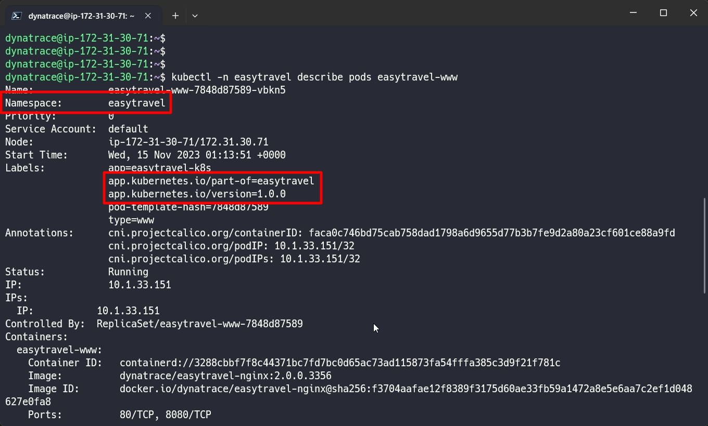
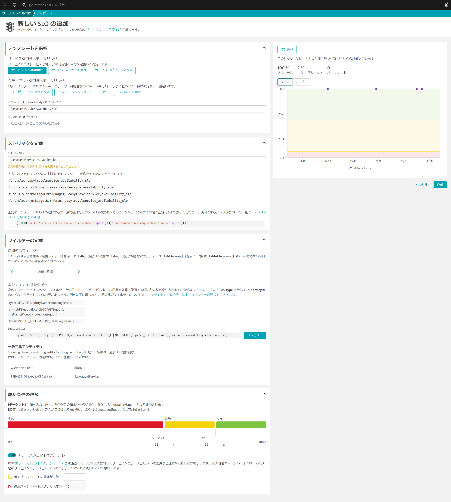
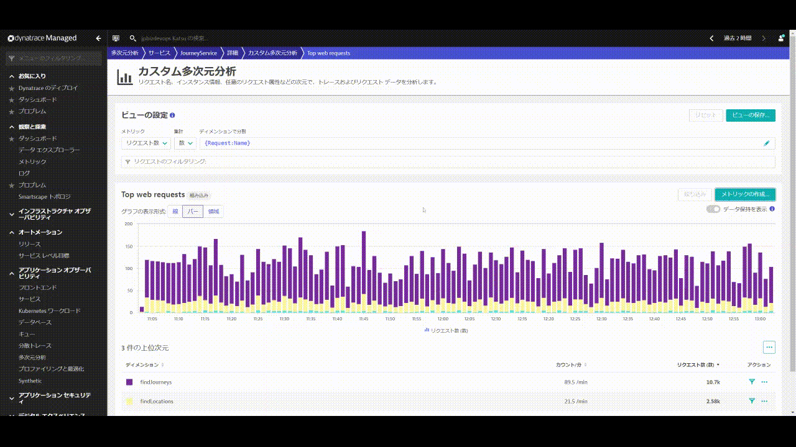
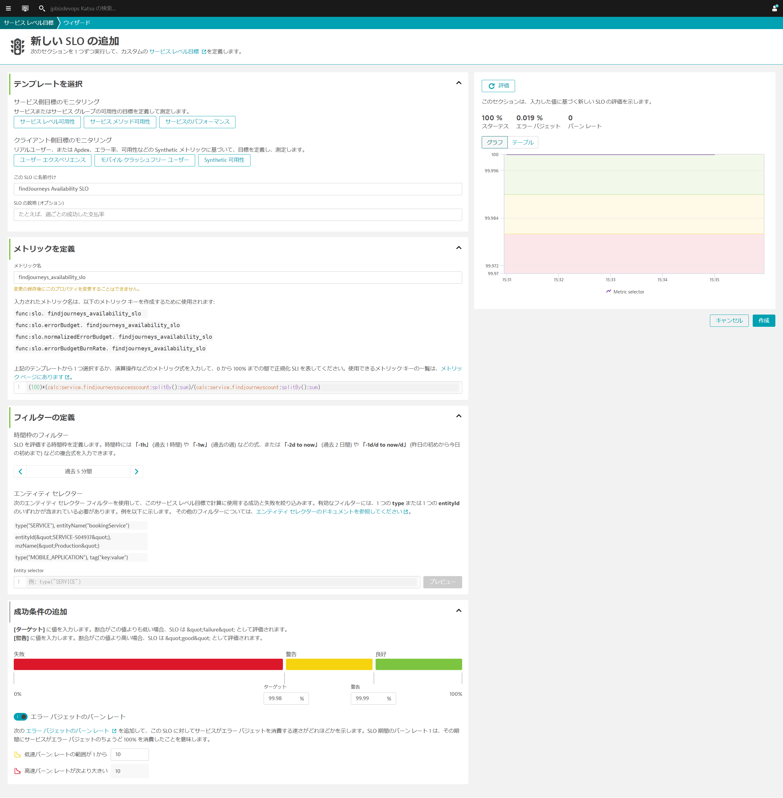
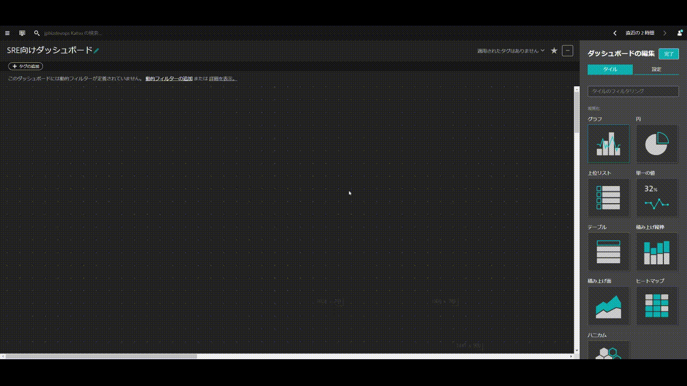
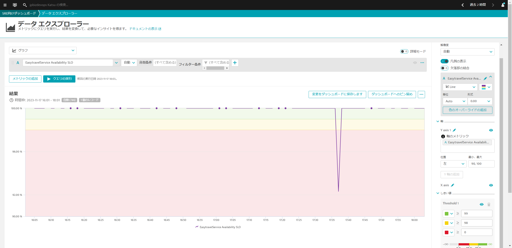
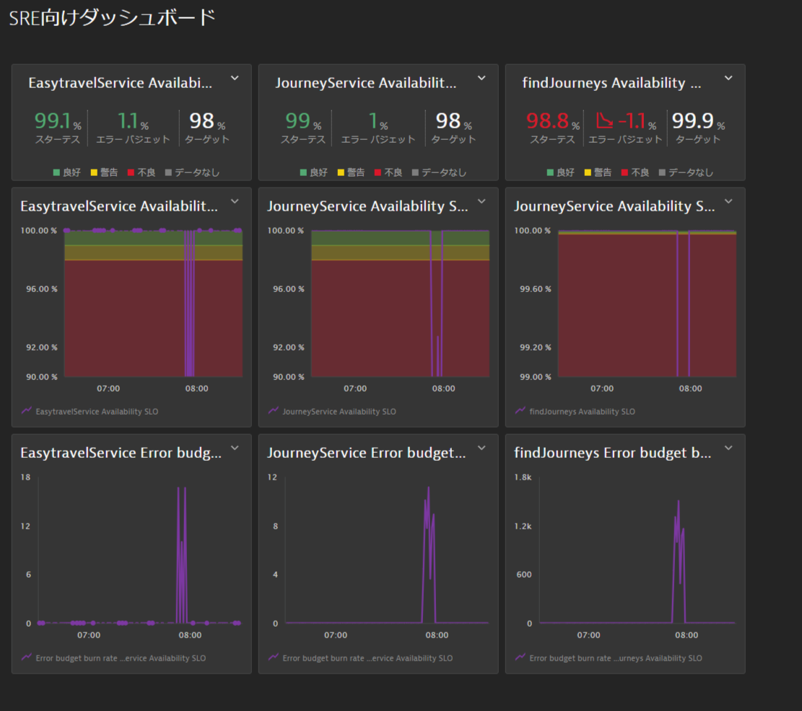

このリポジトリには、Cloud Native Observabilityで実施する内容が含まれています。
Dynatrace主催のハンズオンワークショップへ参加されている方には環境が自動で払い出されます。
事前準備
- DynatraceのAccount：フリートライアルの申し込み
- Kubernetes環境
- Chrome ブラウザ
- SSH クライアント Tera Term
学習内容
- Dynatrace Operatorの導入
- リリース管理
- サービスレベル目標の設定（基本・応用）
この演習では、Kubernetes(Microk8s)を実行しているLinuxインスタンスにDynatrace Operatorをデプロイします。
Linuxターミナルへアクセス
Linuxインスタンスのターミナルにアクセスします。
Dynatrace Operatorのインストール
ブラウザを開き、DynatraceのGUIにアクセスしてください。
以下の手順で進めてください。
- ナビゲーションメニューから 管理 > Dynatraceハブ を開きます。
- Kubernetes を選択します。
- 右下の Kubernetesのモニター ボタンをクリックします。

Kubernetes / Openshiftのモニターページ内で、以下の手順を行います。
- 名前 を入力します 例：
k8s - Dynatrace Operator トークンおよびデータ取り込みトークンのトークンの作成をクリックして、適切なパーミッションのPaaSおよびAPIトークンを作成します。
- SSL証明書チェックのスキップを有効にします。
- ダウンロード: dynakube.yaml ボタンをクリックしてdynakube.yamlファイルをダウンロードします。
- メモ帳などでdynakube.yamlファイルを開き、dynakube.yamlファイルを全て選択し、コピーします。
- ターミナルで
vim dynakube.yamlなどを実行し、dynakube.yamlファイルを貼り付けます。

- Dynatrace UIに戻り、コピーボタンをクリックして、ターミナルに貼り付け実行します。

出力例

インストールの確認
ディプロイメントステータスの表示をクリックすると、接続されているホストの状態を確認することができます。
下の画像のように、接続されたホストが表示されているはずです。

⚠️ トラブルシューティングの手順
easytravelアプリケーションの再起動
様々なプロセスが自動的に検出されているのがわかりますが、Dynatraceはそれらを再起動するよう促します。これは、コードを変更せずに自動的に監視を行うために必要です。
以下のコマンドを実行して、easytravelのNamespacesに含まれるPodsを作り直します。
kubectl delete pods --all -n easytravel
Dynatraceにはリリース監視機能が組み込まれており、導入したアプリケーションのバージョンやステージ（名前空間）、プロダクトを判断することが可能です。
リリースの確認
メニューからオートメーション > リリースを開きます。
これは、リリースインベントリ、リリースイベント、追跡された問題点、の概要を示しています。
各コンポーネントの詳細を見ると、それぞれのコンポーネントの追加メタデータが表示されます。 これにより、監視対象のコンポーネントのコンテキスト情報や、コンポーネントのライフサイクルおよび問題の追跡に関する情報を確認できます。
下の画像はnginx easytravel-www-\*\*\*を開いた例です。

リリースバージョン、ステージ、製品はKubernetesの以下と一致します。
- リリースバージョン：
app.kubernetes.io/version - ステージ：
Namespace - 製品：
app.kubernetes.io/part-of

SLOを決定するためには、はじめにクリティカルユーザージャーニー（CUJ）を選ぶ必要があります。CUJとは、ユーザーにとって重要な体験、期待です。 そのため本来、CUJを決定するにはSREだけでなくビジネス部門にも参加してもらい決定する必要があります。
フロントエンドからのサービスフローの確認
ここでは、Dynatraceのサービスフローによりどのサービスがどれぐらいリクエストを受け付けているか確認し、そこからクリティカルユーザージャーニーを決定する方法について考えてみたいと思います。
- メニューからアプリケーションオブザーバビリティ > フロントエンドを開きます。
- Angular easyTravelをクリックします。
- サービスをクリックし、呼び出されたサービスの右下のView service flowをクリックします。
- サービスフローが確認できるので、表示をスループットに変更します。 今回のケースではEasytravelService > JourneyService > easyTravel-Businessというフローをクリティカルユーザージャーニーと考えることができそうです。 easyTravel-BusinessはDBへのアクセスなので、今回のハンズオンではEasytravelServiceとJourneyServiceの2つに対して、SLOを設定していきます。
基本的なサービスレベル目標(SLO)を設定していきます。Dynatraceが標準で監視しているメトリクスを用いることで簡単に、サービスレベル指標（SLI）を定義し、その閾値としてSLOを設定することができます。
SLOの作成 (EasytravelService)
以下の手順で進めてください。
- メニューからオートメーション > サービス レベル目標を開きます。
- 画面右上の新しいSLOの追加ボタンをクリックします。
ここでは、easyTravelアプリケーションのeasytravel-angular-frontendデプロイメント上で稼働しているEasytravelServiceに対する可用性に関するSLOを作成します。
- サービスレベル可用性ボタンをクリックします。
- この service-level availabilitySLO に名前付けで、このSLOに名前を付けます：
EasytravelService Availability SLO - メトリックを定義を開きます。メトリック名やメトリック式はデフォルトのままにしておきます。
- フィルターの定義を開きます。時間枠のフィルターは
-1h（過去1時間）を指定します。 - エンティティ セレクターは
type("SERVICE"), tag("[KUBERNETES]app:easytravel-k8s"), tag("[KUBERNETES]type:angular-frontend"), webServiceName("EasytravelService")を入力し、プレビューをクリックします。エンティティが1つ表示されていることを確認します。 - 成功条件の追加を開きます。ターゲットを
98%、警告を99%に設定します。 - 評価ボタンをクリックし、グラフが表示されることを確認します。
- 作成ボタンをクリックして、SLOを作成します。

サービスレベル目標が作成され、現在のステータスなどが確認できます。
SLOの作成 (JourneyService)
もう1つJourneyServiceに対する可用性に関するSLOを作成します。
サービスレベル目標のページを開き、新しいSLOの追加ボタンをクリックします。
- サービスレベル可用性ボタンをクリックします。
- この service-level availabilitySLO に名前付けで、このSLOに名前を付けます：
JourneyService Availability SLO - メトリックを定義を開きます。メトリック名やメトリック式はデフォルトのままにしておきます。
- フィルターの定義を開きます。時間枠のフィルターは
-1h（過去1時間）を指定します。 - エンティティ セレクターは
type("SERVICE"), tag("[KUBERNETES]app:easytravel-k8s"), tag("[KUBERNETES]type:backend"), webServiceName("JourneyService")を入力し、プレビューをクリックします。エンティティが1つ表示されていることを確認します。 - 成功条件の追加を開きます。ターゲットを
98%、警告を99%に設定します。 - 評価ボタンをクリックし、グラフが表示されることを確認します。
- 作成ボタンをクリックして、SLOを作成します。
SLO作成の確認
2つのサービス可用性に関するSLOがこれで定義できました。
Dynatraceでは、エラーバジェットやバーンレートに関するメトリクスも自動で生成されますので、ダッシュボードで管理を簡単に行うことができるようになります。
また、本ハンズオンには含まれておりませんがサービスのパフォーマンスやフロントエンドのユーザーエクスペリエンスなどもSLOとして定義することが可能です。
本セッションでは、カスタムメトリックを作成し、それに対するSLOの設定をしていきます。本手順により標準では提供されていない特定のリクエスト毎のSLOを設定することが可能になります。
カタログページのメトリック作成
カタログページへのリクエスト成功数のカスタムメトリックを作成します。s
- ナビゲーションメニューからアプリケーション オブザーバビリティ > サービスを開きます。
JourneyServiceサービスをクリックします。- Key requests/endpointsの右側にあるTop web requestsボタンをクリックします。
- findJourneysリクエストの右側にあるフィルターアイコンをクリックします。
- メトリックの作成ボタンをクリックします。
- メトリック名に
findjourneyscountを入力し、メトリックの作成ボタンをクリックします。

- メトリックの下のドロップダウンメニューから成功した要求の数を選択し、メトリックの作成ボタンをクリックします。
- メトリック名に
findjourneyssuccesscountを入力し、メトリックの作成ボタンをクリックします。
findJourneys用SLOの作成
カスタムメトリックを作成したので、その2つを使用したSLOを設定していきます。
- メニューからオートメーション > サービス レベル目標を開きます。
- 画面右上の新しいSLOの追加ボタンをクリックします。
- このSLOに名前付けに任意の名前を入力します（例：
findJourneys Availability SLO） - メトリックを定義を開きます。メトリック式には
(100)*(calc:service.findjourneyssuccesscount:splitBy():sum)/(calc:service.findjourneyscount:splitBy():sum)と入力します。 - フィルターの定義を開きます。時間枠のフィルターは
-5m（過去5分間）を指定します。 - エンティティ セレクターは空白のままにします。
- 成功条件の追加はデフォルトのままにしておきます。
- 評価ボタンをクリックし、グラフが表示されることを確認します。
- 作成ボタンをクリックして、SLOを作成します。

ここではダッシュボードにSLOウィジェットを作成し、監視する方法について説明します。
- ナビゲーションメニューから観察と探索 > ダッシュボードもしくはお気に入り > ダッシュボードを開きます。
Dynatraceには、Kubernetes workload overviewやReal User Monitoringなど複数のダッシュボードがあらかじめ用意されています。
新規ダッシュボードの作成
ここでは、既存のダッシュボードではなく
- ダッシュボードのリスト画面からダッシュボードの作成ボタンをクリックします。
- ダッシュボード名に任意の名前（例：
SRE向けダッシュボード）を入力し、作成をクリックします。

SLOタイルの追加
- ダッシュボードの編集でタイルのフィルタリングに
sloと入力することでサービスレベル目標タイルだけが表示されます。 - サービスレベル目標をダッシュボードへドラッグアンドドロップします。
- SLOの選択では
EasytravelService Availability SLOを選択します。 - ダッシュボード上の何もタイルが置かれていないところをクリックし、同様の手順で
JourneyService Availability SLOとfindJourneys Availability SLOも追加します。

グラフ・ウィジェットの追加 - SLOステータスのグラフ表示
- ダッシュボード上の何もタイルが置かれていないところをクリックし、グラフタイルを任意の場所にドラッグアンドドロップします。
- データ エクスプローラーでタイルを設定をクリックします。
- メトリックを選択してくださいと記載されているところに
func:sloと入力し、EasytravelService Availability SLOを選びます。 - クエリの実行ボタンをクリックします。
- 右側の設定項目から形式を0.00を選択し、軸 > Y axis 1の最小、最大に
90, 100と入力し、しきい値に以下の値を入力します。- 🟩 ≥
99 - 🟨 ≥
98 - 🟥 ≥
0
- 🟩 ≥

- 変更をダッシュボードに保存しますボタンをクリックします。
- タイトルを
EasytravelService Availability SLOに変更します。 - 同様にJourneyServiceとfindJourneysに関してもグラフを追加します。
- findJourneysに関しては形式を0.00を選択し、軸 > Y axis 1の最小、最大に
99, 100と入力し、しきい値に以下の値を入力します。- 🟩 ≥
99.99 - 🟨 ≥
99.98 - 🟥 ≥
0
- 🟩 ≥
グラフ・ウィジェットの追加 - バーンレートのグラフ表示
- グラフタイルをダッシュボードの任意の場所にドラッグアンドドロップします。
- データ エクスプローラーでタイルを設定をクリックします。
- メトリックを選択してくださいと記載されているところに
func:slo.errorBudgetBurnRateと入力し、Error budget burn rate - EasytravelService Availability SLOを選びます。 - クエリの実行ボタンをクリックします。
- 変更をダッシュボードに保存しますボタンをクリックします。
- タイトルを
EasytravelService Error budget burn rateなどに変更し、完了をクリックします。 - 同様にJourneyServiceとfindJourneysに関してもグラフを追加します。
編集が完了したら、完了ボタンをクリックします。

今回のハンズオンにおけるKubernetes環境の構築手順を掲載します。Kubernetesの環境としてはMicrok8Sを利用しており、Ubuntuホスト1台から試すことが可能です。 ハンズオン終了後に試してみたい方は以下の手順に従って、環境の構築を行うことが可能です。
Ubuntu環境の準備
AWS EC2などにUbuntu環境を用意します。OSバージョンは以下を参考にインスタンスサイズはt3.xlarge相当以上（ストレージ容量30GB）が推奨となります。 bash
$ cat /etc/os-release
NAME="Ubuntu"
VERSION="20.04.6 LTS (Focal Fossa)"
ID=ubuntu
ID_LIKE=debian
PRETTY_NAME="Ubuntu 20.04.6 LTS"
VERSION_ID="20.04"
HOME_URL="https://www.ubuntu.com/"
SUPPORT_URL="https://help.ubuntu.com/"
BUG_REPORT_URL="https://bugs.launchpad.net/ubuntu/"
PRIVACY_POLICY_URL="https://www.ubuntu.com/legal/terms-and-policies/privacy-policy"
VERSION_CODENAME=focal
UBUNTU_CODENAME=focal
必要なパッケージのインストールやアップデートを実施します。
Microk8s環境の構築
以下のコマンドを実行し、microk8s環境を構築します。 bash
sudo snap install microk8s --classic --channel=1.27/stable
sudo snap alias microk8s.kubectl kubectl
mkdir -p ~/.kube
sudo microk8s.config > ~/.kube/config
sudo usermod -a -G microk8s $USER
sudo chown -R $USER ~/.kube
このタイミングで一度、シェルの再接続を実施します。 bash
microk8s.start
microk8s.enable dns
microk8s.enable hostpath-storage
microk8s.enable ingress
CLUSTER_SERVER=$(microk8s config | grep "server:" | sed 's/^.*server: //')
kubectl config set-cluster microk8s-cluster --insecure-skip-tls-verify=true --server="$CLUSTER_SERVER"
サンプルアプリのインストール
サンプルアプリケーション（easyTravel）を展開していきます。スクリプトはGithub上にありますので そちらを利用します。 bash
git clone https://github.com/sukatsu1222/easytravel-k8s.git
easytravel-k8s/deploy-easytravel.sh
easytravel-k8s//deploy-ingress.sh
しばらくするとPodsが起動し、ingress経由でアクセスができるようになります。
ハンズオンワークショップへ参加された方へ
Dynatraceでは2週間のフリートライアルを実施可能です。ぜひもっと触りたいと思った方はぜひ以下のサイトからお申込みください。